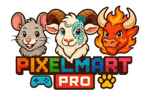

Trade Mark Journal No.2025/027 4 July 2025
UK00004224438 25 June 2025 (18,25,28,35,41)

- Class 18
- Leather for harnesses; Bags for clothes; Bags (Game -) [hunting accessories]; Game bags [hunting accessories]; Bags for carrying pets; Leather bags; Harnesses for animals; Bags; Leather bags and wallets; Bags for sports clothing; Harnesses; Animal harnesses; Leather shopping bags; Bags for umbrellas; Straps for handbags; Artificial fur bags; Bags for carrying animals; Mesh shopping bags; Mesh bags for shopping; Kit bags; Toiletry bags; Belt bags and hip bags; Knitted bags; Flexible bags for garments; Cloth bags; Frames for bags [structural parts of bags]; Nose bags [feed bags]; Bags (Nose -) [feed bags]; Tote bags; Waterproof bags; Sling bags; Bags [envelopes, pouches] of leather for packaging; Bags [envelopes, pouches] of leather, for packaging; Bags [envelopes, pouches] for packaging of leather; Cosmetic bags; Baby carriers [slings or harnesses]; Make-up bags; Animal carriers [bags]; Shopping bags with wheels attached; Luggage bags; Leather luggage straps; Suit bags; Adhesive tags of leather for bags; Duffle bags; Umbrella bags; Garment bags; Clothing for pets; Pets (Clothing for -); Drawstring bags; Leather leashes; Leashes (Leather -); Duffel bags; Cross-body bags; Carry-on bags; Belt bags; Shoe bags; Makeup bags; Garment bags for travel made of leather; Dog waste bag dispensers adapted for use with leashes; Saddlery, whips and apparel for animals; Sling bags for carrying babies; Garment bags for travel; Bags (Garment -) for travel; Sports bags; Bags for sports; Clutch bags; Garments for pets; Camping bags; Nappy bags; Crossbody bags; Bags for climbers; Towelling bags; Straps for suitcases; Clothing for dogs; Clothes for animals; Costumes for animals; Luggage, bags, wallets and other carriers; Mycelium-based imitation leather; Boxes of leather or leatherboard; Key-cases of leather and skins; Bags made of imitation leather; Imitation leather bags; Cases of leather or leatherboard; Cases, of leather or leatherboard; Straps made of imitation leather; Imitation leather hat boxes; Leather or leather-board boxes; Travelling bags made of imitation leather; Sew-on tags of leather for clothing; Handbags made of imitations leather; Handbags made of leather; Bags made of leather; Hat boxes of leather; Boxes of leather (Hat -); Leather and imitation leather; Card holders made of imitation leather; Leather handbags; All-purpose leather straps; Children's shoulder bags; Leather (Imitation -); Harness made from leather; Imitation leather; Ladies' handbags; Moleskin [imitation of leather]; Moleskin [imitation leather]; Leather straps; Straps (Leather -); Leather purses; Leather for shoes; Straps (Leather shoulder -); Leather shoulder straps; Leather and imitations of leather; Attache cases made of imitation leather; Cases of imitation leather; Leather pouches; Pouches of leather; Pouchettes; Sheets of imitation leather for use in manufacture; Shoulder belts [straps] of leather; Straps of leather [saddlery]; Souvenir bags; Grips [bags]; Carrying bags; Bucket bags; Carry-all bags; Canvas bags; Handbags, purses and wallets; Reusable shopping bags; Travel bags made of plastic materials; Grocery tote bags; Hand bags; Bags for campers; Straps for coin purses; Diaper bags; Straps for luggage; Luggage straps; Plastic luggage tags; Boot bags; Handbag straps; Backpacks; Wrist mounted carryall bags; Tool bags of leather, empty; Waist bags; Travel bags; Bags for travel.
- Class 25
- Clothing; Parts of clothing, footwear and headgear; Headbands [clothing]; Headbands for clothing; Capes (clothing); Aprons [clothing]; Party hats [clothing]; Layettes [clothing]; Clothing layettes; Jackets [clothing]; Paper hats for use as clothing items; Furs [clothing]; Hoods [clothing]; Visors [clothing]; Garments for protecting clothing; Gloves [clothing]; Gloves as clothing; Ready-to-wear clothing; Combinations [clothing]; Jackets being sports clothing; Costumes; Veils [clothing]; Jerseys [clothing]; Boas [clothing]; Corsets [clothing, foundation garments]; Jackets (Stuff -) [clothing]; Stuff jackets [clothing]; Wristbands [clothing]; Belts [clothing]; Belts for clothing; Muffs [clothing]; Gussets for bathing suits [parts of clothing]; Kerchiefs [clothing]; Dance clothing; Linings (Ready-made -) [parts of clothing]; Ready-made linings [parts of clothing]; Collars [clothing]; Clothing for sports; Sports clothing; Cowls [clothing]; Knitwear [clothing]; Bodies [clothing]; Maternity clothing; Playsuits [clothing]; Clothes; Mufflers [clothing]; Gussets for leotards [parts of clothing]; Linen clothing; Ready-made clothing; Leisure clothing; Embroidered clothing; Gabardines [clothing]; Clothing for gymnastics; Halloween costumes; Masquerade and halloween costumes; Masquerade costumes; Costumes (Masquerade -); Theatrical costumes; Costumes for use in role-playing games; Dance costumes; Fancy dress costumes; Bathing costumes; Plush clothing; Baby doll pyjamas; Leather belts [clothing]; Gussets for underwear [parts of clothing]; Face masks [fashion wear] ; Clothing for wear in wrestling games; Fur hats; Mitts [clothing]; Headgear for wear; Collars for dresses; Clothing for leisure wear; Hats (Paper -) [clothing]; Paper hats [clothing]; Bra straps [parts of clothing]; Bottoms [clothing]; Shorts [clothing]; Braces for clothing [suspenders]; Tops [clothing]; Collar liners for protecting clothing collars; Braces for clothing; Braces [suspenders] for clothing / Suspenders [braces] for clothing; Chaps (clothing); Fingerless gloves as clothing; Latex clothing; Quilted jackets [clothing]; Clothing made of fur; Clothing for horse-riding [other than riding hats]; Bandeaux [clothing]; Fur jackets; Gussets [parts of clothing]; Sashes for wear; Fur coats and jackets; Fabric belts [clothing]; Gloves for apparel; Golf clothing, other than gloves; Dress shirts; Trunks being clothing; Nappy pants [clothing]; Leather clothing; Clothing of leather; Leather (Clothing of -); Oilskins [clothing]; Roll necks [clothing]; Handwarmers [clothing]; Babies' pants [clothing]; Collar guards for protecting clothing collars; Fashion hats; Dress shields; Shields (Dress -); Babies' clothing; Gussets for footlets [parts of clothing]; Ushankas [fur hats]; Ladies' clothing; Motorcyclists' clothing of leather; Detachable neckpieces for kimonos (haneri); Haneri [detachable neckpieces for kimonos]; Costumes for use in children's dress up play; Fitted swimming costumes with bra cups; Babies' undergarments; Motorcyclists' clothing; Face mask [clothing] ; Gussets for tights [parts of clothing]; Gussets for stockings [parts of clothing]; Gloves including those made of skin, hide or fur; Cyclists' clothing; Babies' pants [underwear]; Bathing costumes for women; Fake fur hats; Ear muffs [clothing]; Swimming costumes; Face masks [clothing], not for medical or sanitary purposes; Children's clothing; Girls' clothing; Slipovers [clothing]; Silk clothing; Undershirts for kimonos (koshimaki); Undershirts for kimonos [koshimaki]; Motorists' clothing; Articles of clothing for theatrical use; Clothing made of imitation leather; Imitation leather dresses; Clothing of imitations of leather; Leather (Clothing of imitations of -); Clothing made of leather; Leather dresses; Belts made from imitation leather; Articles of clothing made of leather; Leather garments; Korean outer jackets worn over basic garment [Magoja]; Leather headwear; Leather shoes; Leather pants; Slippers made of leather; Leather jackets; Belts made of leather; Korean traditional women's waistcoats [Baeja]; Suits made of leather; Japanese style sandals of leather; Shoulder straps for clothing.
- Class 28
- Doll costumes; Costumes being childrens playthings; Toy figurines; Toy hats; Masks (Toy -); Toy masks; Toy dolls; Clothing for toy figures; Toy brooches; Plush toys; Costume masks; Toys; Accessories for dolls; Pet toys; Doll accessories; Sketching toys; Headgear for dolls; Mascot dolls; Plastic character toys; Stuffed and plush toys; Plush dolls; Toys, games and playthings for pet animals; Toy swords; Stuffed plush toys; Plush stuffed toys; Stuffed toys; Clothing for dolls; Cuddly toys; Pet toys made of rope; Costumes being children's playthings; Inflatable toys; Toys and playthings for pet animals; Toy action figurines; Doll clothing; Drawing toys; Fabric toys; Toy armor; Rubber character toys; Dog toys; Stuffed bean-filled toys; Noisemakers [toys]; Toys and playthings for pets; Doll playsets; Toys for pets; Stuffed animals [toys]; Toys for cats; Fluffy toys; Toy ninja weapons; Cloth toys; Modeled plastic toy figurines; Inflatable bath toys; Toy jewellery; Playsets for dolls; Helmets for dolls; Stuffed dolls; Toys for pet animals; Toy sewing sets; Play mats for use with toy vehicles [playthings]; Toy balloons; Soft sculpture plush toys; Toys for animals; Bobblehead dolls; Jewellery for dolls; Toy and novelty face masks; Fantasy character toys; Toys, games, and playthings; Dolls; Play mats incorporating infant toys [playthings]; Stuffed toy animals; Snuffle mats being dog toys; Bendable toys; Miniature car models [toys or playthings]; Toy playsets; Action figures [toys or playthings]; Imitation bones being toys for dogs; Plastic toys; Headwear for dolls; Rocking toys; Musical toys; Toys for dogs; Articles of clothing for toys; Toy weapons; Novelty noisemaker toys for parties; Novelty toys for playing jokes; Animal replicas as playthings; Shoes for dolls; Bobble-head dolls; Plastic toys for use in the bath; Christmas dolls; Bendy balls being toys; Toy animals; Fidget toys; Wooden toys; Toys for babies; Soft sculpture toys; Novelty toys for parties; Clothes for European dolls; Toy figures; Bath toys; Toy flowers; Toy furniture; Toy holsters; Bathtub toys; Plastic models being toys; Inflatable ride-on toys; Toy robots; Ball-jointed dolls [BJD]; Models being toys; Wind-up toys; Puzzle mats [toys]; Puzzles [toys]; Smart plush toys; Toy pistols; Pistols (Toy -); Toy trick noisemakers; Articles of clothing for dolls; Toy tableware; Toy microphones; Doll furniture; Toy figure playsets; Bags for skateboards; Dolls' clothing accessories; Bowls bags; Inflatable bop bags; Dolls' clothing; Dolls' clothes; Catchers' masks; Dolls' furniture accessories; Collectable toy figures; Toy musical boxes [play articles]; Fake teeth [novelty items]; Model craft kits of toy figures; Model cars [toys or playthings]; Clothes for Japanese traditional dolls; Toy musical boxes; Toy environments for use with action figures; Toy sets of carpenters' tools; Toy human characters; Toys in the form of puzzles; Toys relating to magic; Pinball games machines [toys]; Water-squirting toys; Toy model hobby craft kits; Air pistols [toys]; Electronic action toys; Battery-operated action toys; Play mats for use with toy vehicles; Imitation toilet articles being toys; Inflatable toys resembling air vehicles; Mechanical toys; Children's multiple activity toys; Mechanical action toys; Cosaques [toy fireworks]; Plastic model kits for making toy vehicles; Craft toys sold in kit form; Toy model theatres in the form of children's theatre sets; Toy music boxes; Outdoor toys; Toys incorporating money boxes; Model toys; Pistols (Caps for -) [toys]; Caps for pistols [toys]; Music box toys; Soft toys in the form of animals; Electronic toys; Toy beanbags [Otedama]; Action toys; Toys in the nature of imitation foodstuffs; Modular toy play houses; Toy cap pistols; Toy gardening sets; Children's toys; Toy musical instruments; Children's multiple activity toy; Electronic activity toys; Toy air pistols; Toy models; Windup toys; Clockwork toys [of metal]; Golf bag tags of leather; Shoulder pad lacelocks for athletic use; Games relating to fictional characters; Supporters (Men's athletic -) [sports articles]; Men's athletic supporters [sports articles]; Body protectors for American football; American footballs; Girdles for American football; Gloves for American football; Swivels for punching bags; Bags adapted to carry surfboards; Inflatable punching bags; Bag stands for golf bags; Punching bags; Scooters [toys]; Ride-on toys; Wheeled toys; Radio-controlled toys; Whistles [toys]; Toys for use in perambulators; Pull toys; Modular toys; Clockwork toys; Controllers for toys; Crib toys; Toys for sandpits; Toy guitars; Bouncing toys; Toy projectors; Money guns being toys; Xylophones being musical toys; Rattles [toys]; Masks [playthings]; Sandbox toys; Mobiles [toys]; Educational toys; Toy scooters.
- Class 35
- Online retail store services relating to clothing; Online retail store services in relation to clothing; Online retail services for downloadable virtual clothing; Online retail services relating to jewelry; Online retail services relating to clothing; Online retail services relating to cosmetics; Online retail services in relation to downloadable virtual clothing; Online retail services relating to handbags; Online retail services in relation to downloadable virtual handbags; Online retail services in relation to downloadable virtual footwear; Online retail store services relating to cosmetic and beauty products; Online retail services relating to luggage; Online retail services relating to toys; Online retail services in relation to downloadable virtual headwear; Online retail services for downloadable digital music; Advertising the goods and services of online vendors via a searchable online guide; Retail store services in the field of clothing; Online retail services in relation to downloadable virtual works of art; Online ordering services; Online advertising services; Online business networking services; Online retail services for downloadable ring tones; Providing a searchable online advertising guide featuring the goods and services of online vendors; Unmanned retail store services relating to food; Unmanned retail store services relating to drink; Mail order retail services for cosmetics; Retail of third-party pre-paid cards for the purchase of entertainment services; Providing a searchable online advertising guide featuring the goods and services of other on-line vendors on the internet; Mail order retail services for clothing; Retail services in relation to downloadable virtual handbags; Retail services in relation to downloadable virtual clothing; Retail services in relation to downloadable virtual footwear; Online retail services for downloadable and pre-recorded music and movies; Retail of third-party pre-paid cards for the purchase of telecommunication services; Providing online marketplaces for sellers of goods and or services; Retail services in relation to downloadable virtual headwear; Shop retail services connected with carpets; Mail order retail services for clothing accessories; Retail services connected with the sale of furniture; Online community management services; Retail services relating to jewelry; Retail services via catalogues related to beer; Retail services relating to bakery products; On-line advertising and marketing services; Mail order retail services connected with clothing accessories; Retail services for computer software; Business information services provided online from a computer database or the internet; Retail services in relation to bakery products; Mail order retail services related to beer; Providing online commercial directory information services; Retail services in relation to downloadable electronic publications; Online marketing; Retail services relating to delicatessen products; Online ordering services in the field of restaurant take-out and delivery; Retail services connected with stationery; Business management of wholesale and retail outlets; Retail services in relation to pet products; Retail services in relation to smartphones; Retail services in relation to games; Provision of an online marketplace for buyers and sellers of goods and services; Business information services provided online from a global computer network or the internet; Providing on-line auction services; Computerized on-line ordering services; Retail services in relation to downloadable virtual works of art; Retail services relating to clothing; Online data processing services; Retail services in relation to gardening products; Retail services in relation to computer hardware; Retail services relating to furniture; Retail of third-party pre-paid cards for the purchase of clothing; Retail of third-party pre-paid cards for the purchase of multimedia content; Retail shop window display arrangement services; Retail services in relation to educational supplies; Business information services provided on-line from a computer database or the internet; Retail services in relation to coffee; Retail services relating to horticultural products; Retail services in relation to safes; Retail services in relation to jewellery; Retail services in relation to computer software; On-line ordering services in the field of restaurant take-out and delivery; Arranging commercial transactions, for others, via online shops; Retail services in relation to clothing; Mail order retail services related to foodstuffs; Retail services relating to food; On-line auctioneering services via the Internet; Provision of an on-line marketplace for buyers and sellers of goods and services; Retail services in relation to bags; Retail services relating to candy; Retail services in relation to horticulture products; Administration of the business affairs of retail stores; Retail services via catalogues related to foodstuffs; Business management of retail outlets; Online advertising; Retail services in relation to mobile phones; Retail services in relation to furniture; Retail services in relation to stationery supplies; Retail services in relation to saddlery; Retail services relating to automobile accessories; Retail services relating to batteries; Retail services in relation to car accessories; Retail services in relation to cookware; Retail services in relation to downloadable music files; Retail services relating to home textiles; Retail services via global computer networks related to beer; Business merchandising display services; Retail services in relation to bicycle accessories; Retail services connected with the sale of clothing and clothing accessories; Retail services in relation to clothing accessories; Retail services in relation to fashion accessories; Wholesale services relating to clothing; Wholesale services relating to automobile accessories; Wholesale services in relation to clothing; Advertising services relating to clothing; Marketing services relating to esports events; Advertising services relating to esports events; Promotion services relating to esports events; Promotion of goods and services through sponsorship of international sports events; Business management of entertainment venues; Promotion of goods and services through sponsorship of sports events; Business networking services; Arranging of trade fairs; Organisation of trade fairs; Planning and conducting of trade fairs, exhibitions and presentations for economic or advertising purposes; Planning and conducting of trade fairs, exhibitions and presentations for commercial or advertising purposes; Organisation of exhibitions and trade fairs for commercial and advertising purposes; Organisation of exhibitions and trade fairs for commercial or advertising purposes; Organisation of trade fairs and exhibitions for commercial or advertising purposes; Organisation of exhibitions or trade fairs for commercial or advertising purposes; Organisation of exhibitions and trade fairs for business and promotional purposes; Organization of events, exhibitions, fairs and shows for commercial, promotional and advertising purposes; Arranging and conducting of fairs and exhibitions for business purposes; Organization of exhibitions and trade fairs for commercial or advertising purposes; Organization of trade fairs; Conducting, arranging and organizing trade shows and trade fairs for commercial and advertising purposes; Arranging and conducting of fairs and exhibitions for advertising purposes; Arranging and conducting of fairs and exhibitions for business and advertising purposes; Arranging and conducting trade fairs; Arranging of exhibitions for trade purposes; Exhibitions (Arranging -) for trade purposes; Organization of fairs and exhibitions for commercial and advertising purposes; Organisation of trade fairs for advertising purposes; Arranging and conducting trade show exhibitions; Exhibitions (Conducting -) for trade purposes; Arranging of demonstrations for trade purposes; Organizing of trade shows; Promotion of fairs for trade purposes; Organisation of trade fairs for commercial or advertising purposes; Arranging and conducting of commercial exhibitions and shows; Organisation of exhibitions and events for commercial or advertising purposes; Arranging and conducting sales events for others of livestock and registered and commercial cattle; Arranging and conducting sales events for cattle; Arranging and conducting sales events for livestock; Arranging and conducting business fairs; Arranging of displays for trade purposes; Promoting the sale of goods and services of others through promotional events; Retail services in relation to sewing articles; Retail services in relation to sporting equipment; Business administration services for processing sales made on the internet; Business administration services for the processing of sales made on the Internet; Product demonstration services in shop windows by live models; Retail services via catalogues related to non-alcoholic drinks; Retail services relating to sporting goods; Retail services in relation to toys; Retail services in relation to footwear; Retail services in relation to sporting articles; Display services for merchandise; Retail services in relation to art materials; Retail services in relation to headgear; Retail services in relation to hair products; Retail services in relation to furnishings; Retail services in relation to weapons; Retail services relating to furs; Wholesale services in relation to toys; Wholesale services relating to sporting goods; Retail services in relation to tableware; Retail services relating to horticultural equipment; Retail services relating to fake furs; Retail services in relation to fabrics; Retail services relating to automobile parts; Retail services in relation to vehicles; Retail services in relation to domestic electronic equipment; Wholesale services in relation to sporting equipment; Retail services in relation to cooling equipment; Retail services in relation to horticulture equipment; Retail services in relation to festive decorations; Retail services in relation to yarns; Retail services in relation to foodstuffs; Retail services in relation to wearable computers; Retail services in relation to confectionery; Retail services in relation to teas; Mail order retail services related to non-alcoholic beverages; Retail services in relation to audio-visual equipment; Retail services in relation to dairy products; Retail services relating to audiovisual equipment; Retail services in relation to beer; Retail services in relation to agricultural equipment; Retail services in relation to food cooking equipment; Retail services in relation to diving equipment; Advertising services relating to the sale of goods; Wholesale services relating to jewelry; Retail services in relation to bicycles; Retail services in relation to toiletries; Retail services in relation to desserts; Retail services in relation to luggage; Retail services in relation to umbrellas; Retail services in relation to construction equipment; Retail services in relation to freezing equipment; Wholesale services in relation to games; Retail services in relation to cutlery; Retail services in relation to domestic electrical equipment; Retail services relating to flowers; Retail services in relation to lubricants; Retail services in relation to bedding for animals; Retail services in relation to medical instruments; Wholesale services in relation to educational supplies; Wholesale services in relation to art materials; Retail services in relation to smartwatches; Retail services in relation to metal hardware; Retail services connected with the sale of subscription boxes containing cosmetics; Wholesale services in relation to stationery supplies; Retail services relating to fruit; Wholesale services in relation to sporting articles; Retail services in relation to baked goods; Wholesale services relating to furniture; Market analysis services relating to the sale of goods; Retail services in relation to heating equipment; Retail services in relation to veterinary instruments; Retail services in relation to gardening articles; Retail services in relation to physical therapy equipment; Wholesale services in relation to jewellery; Wholesale services in relation to footwear; Wholesale services in relation to horticulture products; Retail services in relation to sex aids; Advertising services provided by television; Advertising services by means of television screen based text; Business management services provided by theatrical agencies; Promoting the goods and services of others by arranging for sponsors to affiliate their goods and services with sports competitions; Agency services for promoting sports personalities; Business promotion services provided by audio/visual means; Advertising and marketing services provided by means of social media; Subscriptions (arranging of) to books, reviews, newspapers or comic books; Book club services retailing books to its members; Retail services for works of art provided by art galleries; Cinematographic film advertising; Blogger outreach services; Advertising services to promote public awareness of social issues; Advertising services to promote public awareness of medical issues; Advertising services to promote public awareness of environmental issues and initiatives; Advertising services to promote public awareness of environmental matters; Shop window display arrangement services; Automatic re-ordering service for business; Window display arrangement services; Window dressing and display arrangement services; Subscriptions (arranging -) to a telematics, telephone or computer service [internet]; Data-based stock location services; Demonstration of goods and services by electronic means, also for the benefit of the so-called teleshopping and homeshopping services; Computerised point-of-sale data collection services for retailers; Business advisory services relating to the setting up of sandwich bars; Vending machine rental services; Business management for freelance service providers; Business intermediary and advisory services in the field of selling products and rendering services; Business advisory services relating to the establishment of motor dealership; Product launch services; Trade show and commercial exhibition services; Business advisory services relating to the running of sandwich bars; Provision of computerised advertising services; Retail services connected with the sale of subscription boxes containing food; Retail service connected with the sale of vehicles via a dealership; Organisation of customer loyalty programs for commercial, promotional or advertising purposes; Direct marketing; Product merchandising; Sales promotion; Merchandising; Direct market advertising; Direct marketing services; Direct marketing consulting; Modeling for advertising or sales promotion; Sales promotion through customer loyalty programs; Modelling for advertising or sales promotion; Publicity and sales promotion; Product marketing; Brand creation services (advertising and promotion); Product merchandising for others; Modeling services for advertising or sales promotion; Sales promotion services; Publicity and sales promotion services; Sales promotion for others; Product sales information; Modelling and models for advertising or sales promotion; Direct mail advertising to attract new customers and to maintain the existing customer base; Consulting in sales techniques and sales programmes; Trade marketing [other than selling]; Sales promotion using audiovisual media; Marketing; Promotion [advertising] of business; Consultancy relating to sales promotions; Distribution of advertising, marketing and promotional material; Advertising, marketing and promotion services; Marketing, advertising and promotion services; Recruitment services for sales and marketing personnel; Promotional marketing; Advertising and marketing; Sales account management; Merchandizing; Direct mail advertising; Advertising services to create corporate and brand identity; Organization of fashion parades for sales promotion purposes; Brand strategy services; Advertising, marketing and promotional services; Advertising, promotional and marketing services; Marketing, advertising, and promotional services; Developing promotional campaigns for business; Sales administration; Direct mail advertising services; Product sales rankings information; Preparation of mailing lists for direct mail advertising services [other than selling]; Retail service connected with the sale of power tools via a distributorship; Customer loyalty services for commercial, promotional and/or advertising purposes; Sales management services; Promotion, advertising and marketing of on-line websites; Advertising services for the promotion of e-commerce; Telephone marketing services [not selling]; Brand creation services; Modelling agency services relating to sales promotions; Advertising and marketing services; Advertising and marketing consultancy; Brand positioning services; Brand positioning; Advisory services relating to sales promotion; Organization, operation and supervision of sales and promotional incentive schemes; Business promotion; Influencer marketing; Business management of wholesale outlets; Administration of sales promotion incentive programs; Advertising services to promote the sale of beverages; Digital marketing; Promoting the goods and services of others through the administration of sales and promotional incentive schemes involving trading stamps; Sales promotions at point of purchase or sale, for others; Administration of sales and promotional incentive schemes; Modelling agency services for sales promotion purposes; Business marketing services; Organisation, operation and supervision of sales and promotional incentive schemes; Advertising services to create brand identity for others; Customer club services, for commercial, promotional and/or advertising purposes; Assistance in franchised commercial business management; Business marketing consultancy; Providing business marketing information; Rental of sales stands; Sales promotion for others provided through the distribution and the administration of privileged user cards; Sales promotion for others through trading stamp schemes; Consultancy services relating to advertising, publicity and marketing; Sales promotion for third parties; Marketing through product placement for others in virtual environments; Consultancy relating to costing of sales orders; Promotion of goods through influencers; Business advice relating to strategic marketing; Providing information concerning commercial sales; Search engine optimisation for sales promotion; Financial marketing; Computerised business promotion; Dissemination of advertising, marketing and publicity materials; Sales promotion services for third parties; Distribution of advertising mail and of advertising supplements attached to regular editions; Affiliate marketing; Marketing assistance; Targeted marketing; Development of promotional campaigns; Providing advice in the field of business management and marketing; Marketing forecasting; Search engine optimization for sales promotion; Business advertising services relating to franchising; Business consultancy services relating to the marketing of fund raising campaigns; Rental of all publicity and marketing presentation materials; Development of marketing concepts; Advice concerning chemical product marketing; Consultancy relating to the organisation of promotional campaigns for business; Consumer profiling for commercial or marketing purposes; Arranging business introductions relating to the buying and selling of products; Research services relating to advertising and marketing; Market research services regarding customer loyalty; Advertising, marketing and promotional consultancy, advisory and assistance services; Business administration services for the processing of sales made on a global computer network; Creative marketing plan development services; Marketing services; Retail services relating to live animals; Wholesale services in relation to bags.
- Class 41
- Entertainment services in the nature of organizing social entertainment events; Entertainment services in the nature of arranging social entertainment events; Entertainment services in the nature of sporting events; Organization of entertainment events; Entertainment services relating to sporting events; Ticket procurement services for entertainment events; Entertainment services in the nature of skating events; Providing will-call ticket services for entertainment, sporting and cultural events; Organization of cosplay entertainment events; Ticket information services for entertainment events; Organisation of entertainment events; Ticket reservation and booking services for education, entertainment and sports activities and events; Organisation of entertainment and cultural events; Entertainment services; Live entertainment services; Online entertainment services; Organisation of entertainment services; Video entertainment services; Services for the organisation of sports events; Entertainment services relating to esports; Presentation of live entertainment events; Interactive entertainment services; Provision of entertainment services through the media of publications; Organizing community sporting and cultural events; Conducting of entertainment events; Entertainment club services; Club entertainment services; Club services [entertainment]; Social club services for entertainment purposes; Music entertainment services; Provision of entertainment services through the media of television; Entertainment services in the form of concert performances; Sports entertainment services; Corporate entertainment services; Conducting of live entertainment events; Production of live entertainment events; Handicapping services for sporting events; Entertainment services in the nature of competitions; Musical entertainment services; Entertainment services in the nature of contests; Organising community cultural events; Provision of entertainment services through the media of video-films; Live entertainment production services; Audio entertainment services; Organisation of events for cultural, entertainment and sporting purposes; Video editing services for events; Provision of entertainment services through the media of cine-films; Radio entertainment services; Education, entertainment and sport services; Entertainment services in the form of cinema performances; Ticket information services for esports events; Entertainment services relating to competitions; Services providing entertainment in the form of live musical performances; Entertainment in the form of live musical performances (Services providing -); Television entertainment services; Organising community sporting events; Musical group entertainment services; Time recording services for sporting events; Provision of club entertainment services; Entertainment services in the nature of a wrestling club; Hospitality services (entertainment); Ticket information services for sporting events; Advisory services relating to the organisation of sporting events; Gaming services for entertainment purposes; Organising events for entertainment purposes; Popular entertainment services; Entertainment services in the nature of video games; Holiday centre entertainment services; Administration [organisation] of entertainment services; Services for the organisation of football events; Booking of sports personalities for events (services of a promoter); Cabaret entertainment services; Nightclub services [entertainment]; Ticket procurement services for sporting events; Entertainment information services; Organization of competitions [education or entertainment]; Competitions (Organization of -) [education or entertainment]; Organization of competitions for education or entertainment; Entertainment agency services; Entertainment services provided during intervals at sports events; Video game entertainment services; Rental services relating to equipment and facilities for education, entertainment, sports and culture; Provision of entertainment services through the media of audio tapes; Advisory services relating to entertainment; Exhibition services for entertainment purposes; Information about entertainment and entertainment events provided via online networks and the Internet; Entertainment services in the form of musical group performances; Fan club services (entertainment); Entertainment services relating to sport; Camp services (Holiday -) [entertainment]; Holiday camp services [entertainment]; Organisation of conferences related to entertainment; Tv entertainment services; Entertainment booking services; Entertainment services in the nature of interactive television programmes; Entertainment services, namely, provision of a virtual reality or metaverse based simulation gaming service; Entertainment in the form of television programmes (Services providing -); Arranging and conducting of live entertainment events for charitable purposes; Internet radio entertainment services; Road shows being entertainment services; Educational and entertainment services, namely, providing motivational speaking services; Night club services [entertainment]; Services for the production of entertainment in the form of television; Sporting education services; Entertainment services in the form of television programmes; Cultural, educational or entertainment services provided by art galleries; Provision of radio and television entertainment services; Master of ceremony services for parties and special events; Arranging and conducting of live entertainment events; Multimedia entertainment software publishing services; Entertainment, sporting and cultural activities; Services for the production of entertainment in the form of video; Entertainment services for children; Entertainment services relating to quizzes; Wedding celebrations (Organisation of entertainment for -); Music festival services; Cinematographic entertainment services; Organization of entertainment competitions; Entertainment services provided in virtual environments; Entertainment services in the nature of webcam television programmes; Entertainment services for producing live shows; Gaming services; Entertainment, education and instruction services; Ticket agency services [entertainment]; Entertainment ticket agency services; Laser show services [entertainment]; Artistic management of entertainment venues; Conducting of conventions; Arranging of conventions for trade purposes; Organising of education conventions; Arranging of conventions for cultural purposes; Arranging of conventions for entertainment purposes; Conducting of conventions for entertainment purposes; Arranging of conventions for business purposes; Organization of seminars and conventions in the field of medicine; Arranging of conventions for training purposes; Organisation of conferences, exhibitions and competitions; Arranging and conducting of conventions; Arrangement of conventions for recreational purposes; Arranging of conventions for educational purposes; Arrangement of conventions for educational purposes; Arranging and conducting of conferences, congresses and symposiums; Conducting entertainment exhibitions in magic shows; Arranging for ticket reservations for shows and other entertainment events; Organising of meetings in the field of entertainment; Organising of exhibitions for entertainment purposes; Theatrical floor shows provided at performance venues; Organisation of automobile rallies, tours and racing events; Organising of festivals; Amusement and theme parks, fairs, zoos and museums; Organising of games and competitions; Organising of entertainment competitions; Organising of competitions for entertainment; Competitions (Organising of entertainment -); Organisation and holding of fairs for cultural or educational purposes; Arranging and conducting of conferences and congresses; Entertainment services in the nature of live performances of roller skating exhibitions and competitions; Fun fairs; Arranging of festivals for cultural purposes; Organization of sporting events and competitions, involving animals; Organising of sports competitions and events; Provision of facilities for horse-race meetings; Horse jumping events (Organising of -); Arranging of exhibitions for cultural purposes; Exhibitions (Arranging -) for cultural purposes; Organisation of congresses and conferences for cultural and educational purposes; Conducting of seminars and congresses; Arranging of workshops and seminars; Organising of sporting contests; Booking of seats for shows and sports events; Horse shows (Organising -); Organisation of seminars and conferences; Musical floor shows provided at performance venues; Organisation of equestrian contests; Organising dancing events; Theatrical shows provided at performance venues; Arranging of exhibitions for entertainment purposes; Organising events for cultural purposes; Conducting workshops and seminars in art appreciation; Conducting of workshops and seminars in art appreciation; Rental of entertainment halls; Workshops for cultural purposes; Arranging of competitions for cultural purposes; Arranging of conferences relating to cultural activities; Museum facilities (Provision of -) for exhibitions; Organizing and arranging exhibitions for entertainment purposes; Arranging of cultural events; Arranging of festivals for entertainment purposes; Organising of educational exhibitions; Arranging of demonstrations for cultural purposes; Organising of educational congresses; Organising of sporting events, competitions and sporting tournaments; Arranging of conferences relating to trade; Dancing displays (Organising of -); Animal exhibitions (Arranging of -); Organizing cultural and arts events; Festivals (Organisation of -) for cultural purposes; Organisation of sporting events and competitions; Dancing competitions (Organising of -); Organising of dancing competitions; Organisation of meetings and conferences; Art exhibitions; Exhibitions (Conducting -) for cultural purposes; Organisation of games and competitions; Festivals (Organisation of -) for entertainment purposes; Booking of seats for entertainment events; Online gaming services; Online casino services; Online education services; On-line gaming services; Online gambling services; Online digital publishing services; On-line casino services; On-line game services; Online research library services; Sales training services for retailers; Online computer game services; Online reference library services; Online academic library services; Training services relating to retail marketing; On-line gambling services; On-line publishing services; Online game services through mobile devices; Game services provided online from a computer network; Betting shop services; Staff training services relating to the retail trade; Online sports betting services; Entertainment services provided on-line from a computer database or the internet; On-line library services, namely, providing electronic library services which feature newspapers, magazines, photographs and pictures via an on-line computer network; On-line ticket agency services for entertainment purposes; Ticket reservation and booking services for entertainment events; Entertainment in the nature of live performances and personal appearances by a costumed character; Entertainment services provided by performing artists; Entertainment services featuring fictional characters; Entertainment services provided by a musical group; Entertainment services provided by a music group; Entertainment services by stage production and cabaret; Entertainment services performed by a musical group; Entertainment in the nature of live performances by musical bands; Entertainment services provided by television; Entertainment services provided by a musical vocal group; Entertainment services performed by musicians; Entertainment services performed by singers; Entertainment by means of theatre productions; Entertainment services provided by vocalists; Entertainment in the nature of live performances by rock groups; Entertainment by means of concerts; Entertainment services provided by radio; Providing online entertainment in the nature of game shows; Entertainment by film; Production of entertainment shows featuring singers; Entertainer services provided by musicians; Entertainment by means of television; Production of entertainment shows featuring dancers; Electronic game services and competitions provided by means of the internet; Organisation of fashion shows for entertainment purposes; Entertainment services in the form of musical vocal group performances; Presentation of live performances by a musical group; Rendering of musical entertainment by vocal groups; Production of entertainment shows featuring dancers and singers; Musical concerts by television; Fashion shows for entertainment purposes (Organization of -); Organization of fashion shows for entertainment purposes; Animated musical entertainment services; Presentation of live performances by musical bands; Rendering of musical entertainment by instrumental groups; Organising of competitions [entertainment] by telephone; Organization of fashion parades for entertainment purposes; Entertainment services provided by hotels; Entertainment services in the nature of an amusement park show; Production of entertainment shows featuring instrumentalists; Providing entertainment in the nature of film clips via a website; Entertainment provided by cable television; Providing user ratings for entertainment or cultural purposes; Production of entertainment in the form of a television series; Amusement park services with a theme of television productions; Production of television entertainment features; Organisation of musical entertainment; Interviewing of contemporary figures for entertainment purposes; Entertainment services provided at country clubs; Organisation of entertainment competitions; Providing user rankings for entertainment or cultural purposes; Presentation of live entertainment performances; Education services provided by television; Providing facilities for movies, shows, plays, music or educational training; Entertainment services provided by on-line streams; Live performances by a musical bands; Providing sports entertainment via a website; Providing online entertainment in the nature of game tournaments; Presentation of live performances by rock groups; Entertainment in the nature of dance performances; Entertainment by means of roadshows; Organisation of live musical performances; Entertainment in the nature of live dance performances; Entertainment in the form of recorded music (Services providing -); Theatrical performances both animated and live action; Entertainment by means of radio; Services for the production of entertainment in the form of film; Entertainment in the nature of ongoing game shows; Entertainment in the nature of orchestra performances; Providing user reviews for entertainment or cultural purposes; Entertainment in the nature of ballet performances; Production of live entertainment features; Entertainment by means of wireless television broadcasts; Organising of shows for entertainment purposes; Production of sporting events for television; Live performances by a musical band; Electronic game services provided by means of the internet; Entertainment in the nature of gymnastic performances; Production of entertainment in the form of television programmes; Education services provided by television programmes; Booking of performing artists for events (services of a promoter); Entertainment services, namely, providing on-line computer games; Production of live television programmes for entertainment; Providing age ratings for television, movie, music, video and video game content; Amusement park services with a theme of radio productions; Organisation of outings for entertainment; Entertainment services provided by telephone; Providing online non-downloadable comic books and graphic novels; Providing online comic books, not downloadable; Providing on-line non-downloadable comics; Exhibition of cine films; Production of animated cartoons; Organisation of comedy shows; Production of comedy shows; Comedy club services; Rental of costumes [theatrical or masquerade]; Providing online graphic novels, not downloadable; Creating animated cartoons; Book publishing; Auditioning for tv game shows; Electronic book reader rental; Rental of electronic book readers; Hypnotist shows [entertainment]; Production of a continuous series of animated adventure shows; Publishing of scripts for theatrical use; Adult education services relating to environmental issues; Religious education; Education (Religious -); Vocational education for young people; Esports officiating; Adult education services; Adult education services relating to law; Educational services for the clergy; Organisation of esports events; Adult education services relating to medicine; Education, entertainment and sports; Organisation of competitions [education and/or entertainment]; Entertainment in the nature of ethnic festival; Education in movement awareness; Male dance exhibitions; Education services relating to religion; Adult education services relating to pharmacy; Teaching of chinese martial arts; Health education; Adult education services relating to commerce; Blindness prevention education services; Adult education services relating to banking; Religious educational services; Entertainment in the nature of esports competitions; Teaching of french to children through recreation; Adult education services relating to finance; Ticketing and event booking services; Provision of automated video recording services; Services for the operation of computerised bingo; Training in the display of food; Lighting technician services for events; Training courses in strategic planning relating to advertising, promotion, marketing and business; Training relating to sales; Conducting of live sports events; Presentation of live show performances; Live music performances; Performances (Presentation of live -); Live performances (Presentation of -); Presentation of live performances; Band performances (Live -); Live band performances; Organisation of live performances; Live musical performances; Arranging and presenting of live performances; Conducting of live esports events; Live music shows; Live entertainment; Live dance exhibitions; Presentation of live comedy performances; Presentation of live dance performances; Live demonstrations for entertainment; Production of live performances; Live stage shows; Provision of live musical performances; Live musical concerts; Live music concerts; Preparing subtitles for live theatrical events; Live show production services; Live comedy shows; Presentation of live comedy shows; Production of live shows; Live music services; Organisation of live shows; Live performances by rock groups; Provision of live shows; Live band performance services; Provision of facilities for live band performances; Live performance services; Live musical theater performances; Production of live entertainment; Production of revue shows before live audiences; Provision of live entertainment; Presentation of live Christmas musical productions; Provision of live music; Organisation of ice skating shows for live audiences; Providing facilities for the playing Live Action Playing [LARP] games; Production of animated and live action programmes.
Pixel Mart Pro LTD